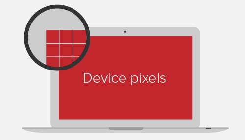
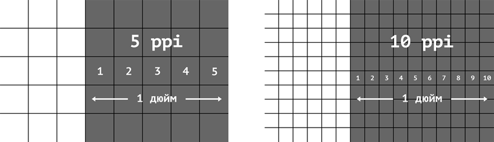
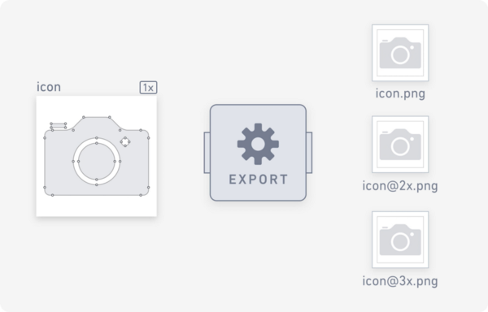

Retina-дисплей (ретіна) - маркетинговий термін компанії Apple, що описує пристрої з екранами підвищеної піксельної щільності. В той самий розмір екрану вміщається більше фізичних пікселів за рахунок того, що їх розмір менший. Це підвищує якість і чіткість зображення, робить кольори насиченішими і живішими.

Фізичні пікселі
Фізичні пікселі (device pixel або hardware pixel) - найменші елементи будь-якого екрану (його матриці), кожен з яких має свій колір і яскравість.
Роздільна здатність екрану (screen resolution) - це кількість фізичних пікселів на екрані пристрою. Наприклад, роздільна здатність 1920x1080 означає, що екран шириною 1920 фізичних пікселів і висотою 1080. Якщо помножити, вийде загальна кількість пікселів на такому екрані - 2073600.
Щільність екрану (pixel density) - це кількість фізичних пікселів, які поміщаються в один дюйм. Вимірюється в ppi (pixels per inch). Що вища щільність, то менший розмір пікселя і більше їх на екрані.
CSS-пікселі
CSS-пікселі (device-independent pixels) - абстрактна величина, що не залежить від екрану пристрою і використовується браузером для розрахунку розмірів контенту на сторінці.
На звичайних екранах один CSS-піксель відповідає одному фізичному пікселю пристрою. Під час масштабування і на екранах високої піксельної щільності в одному CSS-пікселі може міститися більше одного фізичного пікселя.
Наприклад, є блок розміром 2x2 пікселя. Всі розміри елементів, які вказуються в CSS або HTML - це CSS-пікселі.
div {
width: 2px;
height: 2px;
}
На звичайних екранах він буде займати область 2x2 фізичних пікселів, а на Retina-екранах, наприклад з щільністю 2, цей самий блок отримає 4x4 фізичних пікселів. Тобто в два рази більше за горизонталлю і вертикаллю. Таким чином, на Retina-екранах з щільністю пікселів в два рази вище стандартної, кількість пікселів у 4 рази більша, ніж на звичайних.
Растрові пікселі
Растрові пікселі (bitmap pixels) - найменші частини, що складають растрові зображення (png, jpg, gif тощо). Кожен піксель містить інформацію про свій колір і розташування в системі координат зображення.
У коді розміри зображення задаються в CSS-пікселях. Під час відображення на звичайному екрані, один растровий піксель відповідає одному CSS-пікселю. На Retina-екранах з щільністю 2, кожен растровий піксель множиться у 4 рази, що призводить до втрати якості зображення, не підготовленого до ретіни.
Саме тому растрові зображення для Retina-екранів повинні мати більшу кількість пікселів. Це гарантує їх чіткість відображення в браузері.
Ретинізація графіки
Для Retina-екранів необхідні спеціально підготовлені ресурси. Текст і векторна графіка (SVG) відображаються однаково добре на будь-якому екрані, оскільки їх рендерить сам браузер за набором точок і кривих, що їх з'єднують. Ретинізація - це прийом для підготовки растрової графіки.
Для того щоб підготувати растрову графіку для ретіни, необхідно експортувати з макета більше зображення. Наприклад, щоб показати фотографію 200x300 пікселів на екрані з щільністю 2, необхідно підготувати її варіант у розмірі 400x600 пікселів.
Процес підготовки складається з експорту зображень в N-раз більше розміру оригіналу, і збереження їх з відповідними префіксами @2x і @3x. Для оригіналу префікс не потрібен.
Після чого достатньо задати потрібний розмір тегу <img> в HTML або CSS коді.
<img src="icon.png" width="200" height="300" />
<img src="icon@2x.png" width="200" height="300" />
<img src="icon@3x.png" width="200" height="300" />
У прикладі використовується онлайн-сервіс зображень. Завантажується три зображення 320x240 (1x), 640x480 (2x) і 960x720 (3x) пікселів. Розмір всіх елементів <img> однаковий - 320x240 CSS-пікселів. Якщо перейти в приклад з телефону або просто збільшити масштаб сторінки з прикладом, буде помітно, що перше зображення сильно розмивається, друге залишається досить якісним, а третє - завжди кристально чітке.
See the Pen lesson-16-retinized-image by goit-academy (@goit-academy) on CodePen.
Увага:
Це не означає, що завжди потрібно експортувати і завантажувати найбільше
зображення. На цьому кроці ми розглянули проблему і навчилися робити
ретинізацію растрової графіки. Далі ми навчимося завантажувати різні
зображення під кожну ширину або щільність екрану.